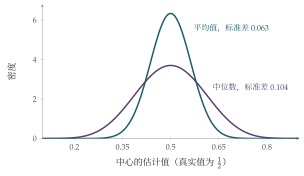

STEP II 2000，第 14 题
继续之前，请先阅读题目（原题为英文）。题目载于 STEP Support Programme 的题目资料库： step.maths.org/questions/00-s2-q14
引子
要估计一组量度数据的中心，你可以取平均值（mean），也可以取中位数（median）。哪一个较好？答案视乎数据而定。假如量度结果偶尔会出现离谱的误差，中位数就可靠得多：一个荒谬的数值足以把平均值拉到任何地方，却几乎动摇不了中位数。至于规规矩矩的数据，通常是平均值胜出。本题要量度的，正是在数据服从均匀分布（uniform distribution）时，平均值究竟胜出多少：中位数的方差（variance）是平均值的三倍，所以要令中位数与平均值同样精确，就需要三倍数量的观测值。
这个比较引入了效率（efficiency）的概念，它是选择统计方法时的主要考虑之一；同时也用到 Beta 积分（beta integral），这个积分在 第 4.4 节 也出现过。
动笔之前
为甚么中位数的密度（density）与 \(y^n(1 - y)^n\) 成正比？（要 \(Y\) 接近 \(y\)，\(2n + 1\) 个值之中须有多少个在其下，又有多少个大于 \(y\)？）
中位数要落在 \(y\)，就必须有一个值在 \(y\)，\(n\) 个值在其下（各自的概率为 \(y\)），另有 \(n\) 个值在其上（各自的概率为 \(1 - y\)）。这就得出因子 \(y^n(1 - y)^n\)；常数则是数算哪些值扮演哪个角色的选法数目。
逐步解题
阶段 1 常数
密度的积分必须等于 \(1\)： \[k\int_0^1y^n(1 - y)^n\,\mathrm{d}y = k\cdot\frac{n!\,n!}{(2n + 1)!} = 1, \qquad k = \frac{(2n + 1)!}{(n!)^2}. \qed\]
阶段 2 平均值与方差
密度关于 \(\frac12\) 对称（把 \(y\) 换成 \(1 - y\) 即可看出），所以 \(\mathrm{E}(Y) = \frac12\)。
利用 Beta 积分计算 \(\mathrm{E}(Y^2) = k\int_0^1y^{n+2}(1 - y)^n\,\mathrm{d}y\)，并化简当中的阶乘。
\[\mathrm{E}(Y^2) = \frac{(2n + 1)!}{(n!)^2}\cdot\frac{(n + 2)!\,n!}{(2n + 3)!} = \frac{(n + 2)(n + 1)}{(2n + 3)(2n + 2)} = \frac{n + 2}{2(2n + 3)}.\] 因此 \[\mathrm{Var}(Y) = \frac{n + 2}{2(2n + 3)} - \frac14 = \frac{2(n + 2) - (2n + 3)}{4(2n + 3)} = \frac{1}{4(2n + 3)}. \qed\]
阶段 3 与平均值比较
\(\bar X\) 是 \(2n + 1\) 个独立均匀变量的平均，它的平均值和方差是多少？
每个 \(X_i\) 的平均值为 \(\frac12\)，方差为 \(\frac{1}{12}\)，所以 \(\mathrm{E}(\bar X) = \frac12\)，而 \(\mathrm{Var}(\bar X) = \frac{1}{12(2n + 1)}\)。当 \(n\) 很大时， \[\mathrm{Var}(Y) \approx \frac{1}{8n}, \qquad \mathrm{Var}(\bar X) \approx \frac{1}{24n}.\]
假设 \(Y\) 和 \(\bar X\) 都服从正态分布（normal distribution），平均值为 \(\frac12\)，标准差（standard deviation）分别为 \(\sigma_Y\) 和 \(\sigma_{\bar X}\)，试用标准正态分布函数 \(\Phi\) 表示这两个概率。
\(\mathrm{P}\bigl(|Y - \frac12| < \frac{d}{\sqrt n}\bigr) = 2\Phi\bigl(\frac{d}{\sqrt n\,\sigma_Y}\bigr) - 1\)，而 \(\sqrt n\,\sigma_Y \to \frac{1}{\sqrt8}\)；\(\bar X\) 的情况相似，其中 \(\sqrt n\,\sigma_{\bar X} \to \frac{1}{\sqrt{24}}\)。所以两个概率分别趋向 \(2\Phi(d\sqrt8) - 1\) 和 \(2\Phi(d\sqrt{24}) - 1\)。由于 \(\Phi\) 是递增函数，而且 \(\sqrt{24} > \sqrt8\)，后者较大，因此对所有足够大的 \(n\)，不等式都成立。■ 平均值较有可能接近真正的中心。

回顾
Beta 积分。\(\int_0^1y^r(1 - y)^s\,\mathrm{d}y\) 这一条公式，同时给出了归一化常数（normalising constant）和各阶矩（moments）。
对称性给出平均值。求 \(\mathrm{E}(Y)\) 根本不用积分。
在合适的尺度上比较离散程度。把标准差乘以 \(\sqrt n\)，比较的结果便与 \(n\) 无关。
背后的数学
效率
两个无偏估计量（unbiased estimator）的相对效率（relative efficiency）是它们方差之比；它说明其中一个需要多少倍的观测值，才能与另一个看齐。对于均匀分布的数据，中位数相对于平均值的效率是 \(\frac13\)。对于正态分布的数据，这个数字是 \(\frac2\pi \approx 0.64\)：中位数大约需要多 \(57\%\) 的观测值。但遇上厚尾（heavy-tailed）数据，形势就逆转了。对于柯西（Cauchy）分布（第 12.22 节），平均值毫无用处，因为 \(n\) 个观测值的平均并不比单独一个观测值好，而中位数却表现良好。对于拉普拉斯（Laplace）分布（第 12.24 节），中位数的效率是平均值的两倍。
稳健统计学
中位数是稳健（robust）的：即使把接近一半的数据改成任意数值，它也不会移动太远。平均值却没有这种保障：一个错误的数值就足以把它毁掉。在 1960 及 1970 年代，John Tukey、Peter Huber 等人发展出稳健统计学（robust statistics），即一些估计量，对干净的数据而言效率几乎与平均值一样高，却又能抵御离群值（outlier），例如截尾平均值（trimmed mean）（舍去最大和最小的 \(10\%\)，再取余下数据的平均），跳水、体操等运动项目的评分就采用这种方法。
拉普拉斯在 1774 年证明，假如误差服从双指数（拉普拉斯）分布，则真实值的最佳估计是中位数；高斯（Gauss）在 1809 年证明，假如误差服从正态分布，则最佳估计是平均值，他并由此得出最小二乘法（method of least squares）。谁是谁非，取决于误差的表现如何；每遇上一种新的数据，统计学家至今仍会为这个问题争论一番。
思维技巧
两种方法可能平均而言都正确；要比较的是它们的答案变动有多大，以及数据增加时这种变动收缩得有多快。
在大学里，渐近效率（asymptotic efficiency），即比较大样本下的方差，是在不同统计方法之间作取舍的标准工具；与之并用的还有稳健性，以应付模型可能出错的情况。
延伸练习
中位数的密度。用数算的方法推导密度 \(\frac{(2n + 1)!}{(n!)^2}y^n(1 - y)^n\)：一个值落在 \([y, y + \delta y]\) 内，\(n\) 个在其下，\(n\) 个在其上。
三个观测值。当 \(n = 1\)（三个均匀观测值）时，求 \(\mathrm{Var}(Y)\) 和 \(\mathrm{Var}(\bar X)\) 的准确值。哪一个较小？
中列数。中心的另一个估计量是中列数（midrange）\(\frac12(\max + \min)\)。证明对于均匀分布的数据，若有 \(m = 2n + 1\) 个观测值，它的方差是 \(\frac{1}{2(m + 1)(m + 2)}\)。它与平均值相比如何？（试与 第 13.3 节 比较。）
一个离群值。十一个量度结果为 \(9.8\)、\(9.9\)、\(10.0\)、\(10.0\)、\(10.1\)、\(10.1\)、\(10.2\)、\(10.2\)、\(10.3\)、\(10.4\) 和 \(104\)（打字错误）。比较平均值和中位数。
延伸阅读
John Rice, Mathematical Statistics and Data Analysis（Duxbury），论及顺序统计量（order statistics）和效率。
Rand Wilcox, Fundamentals of Modern Statistical Methods（Springer）。为非专家讲解稳健方法为何重要。
Stephen Stigler, The Seven Pillars of Statistical Wisdom（Harvard University Press）。从历史角度看数据的汇总、平均值和中位数。